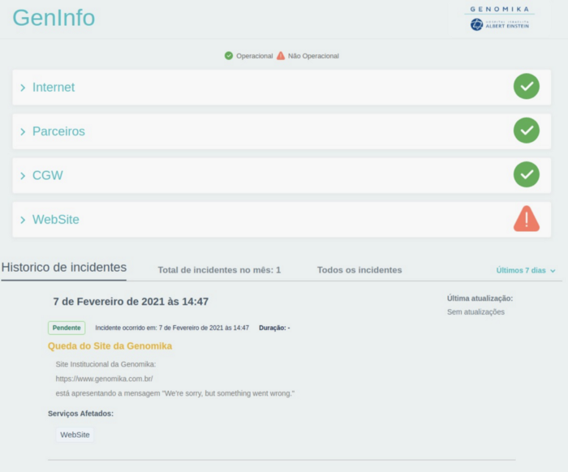

Site criado para fins didáticos, estava curioso em aprender JS e usar o Node, daí tive a ideia de implementar um site,
aonde eu poderia mandar para os amigos, a fim de brincar com eles... e assim criei o "Gerador de Personagens"
Clique aqui para acessar o site!
GenInfo nasceu de uma necessidade de termos no laboratório uma ferramenta que auxiliasse a nossa demanda de incidentes e
que ao final do mês tivéssemos uma noção de quantos incidentes teriam ocorridos e quais os serviços afetados,
a ideia surgiu desta necessidade, haviam outras ferramentas open sources disponíveis, mas preferimos criar a nossa.
Pois poderíamos ajustar e encaixar devidamente nas nossas necessidades.
Tela inicial do projeto:

O projeto foi criado com Django e Python, usamos o Django 2.0 e Python3. O site está hospedado no Heroku